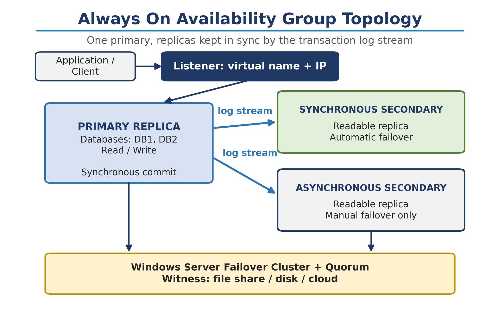

Chapter 16: HA/DR - Always On, FCI & Quorum
Availability Groups protect databases, not whole instances, and they depend on Windows clustering, endpoints, and quorum working together. This chapter covers replica design, sync states, failover choices, and the checks that keep a failover safe. You will learn how to diagnose a replica that stops syncing and how to run a drill without guessing.
In this chapter:
Key learning: An Availability Group stays healthy only when log shipping, redo, quorum, and the listener are all checked together. A good DBA proves sync state and queue size before a failover, and rechecks role, sync, and application connectivity after it.
Q167. How is an Always On Availability Group built: replicas, listener, and endpoints?
Answer: An Availability Group is a set of databases that fail over together, hosted on replicas in a Windows Server Failover Cluster. One replica is the primary and accepts reads and writes, and up to eight secondary replicas each hold their own copy of the databases. Each replica has its own storage, so there is no shared disk requirement as there is with a Failover Cluster Instance.
Replicas exchange transaction log records through database mirroring endpoints, by default on port 5022, with encryption and authentication configured on the endpoint. The primary hardens log records locally and streams them to secondaries, which then redo the log to keep their copies current. The cluster owns the Availability Group resource and tracks replica roles and health.
Clients connect through the listener, which is a virtual network name with one or more IP addresses and a port. The listener always points to the current primary, so applications do not need to know which node holds the primary role after a failover. Failover moves the primary role and the listener together as a unit.
SELECT ag.name AS ag_name, ar.replica_server_name, ar.availability_mode_desc,
ar.failover_mode_desc, ar.primary_role_allow_connections_desc
FROM sys.availability_groups AS ag
INNER JOIN sys.availability_replicas AS ar ON ar.group_id = ag.group_id;
SELECT name, type_desc, state_desc
FROM sys.database_mirroring_endpoints;
SELECT listener_id, dns_name, port, ip_configuration_string_from_cluster
FROM sys.availability_group_listeners;Key learning: An Availability Group streams transaction log records from the primary to each secondary through endpoints, and clients connect through the listener rather than to a single node.

Q168. What is the difference between synchronous and asynchronous commit, and between automatic and manual failover?
Answer: With synchronous commit, the primary waits until a synchronous secondary hardens the log record before acknowledging the commit to the client. That gives zero data loss when the secondary is in the SYNCHRONIZED state, at the cost of added latency on every commit, especially over distance. With asynchronous commit, the primary does not wait, so commits stay fast but recent transactions can be lost if the primary fails before the log reaches the secondary.
Automatic failover happens without human action when a synchronous secondary is healthy, the failover mode is automatic, and the cluster still has quorum. Manual failover is started by a DBA, either as a planned move to a synchronized secondary with no data loss, or as a forced failover when the primary is gone and some loss is accepted. Asynchronous replicas support manual failover only, never automatic failover.
In practice, use synchronous commit for local high availability where automatic failover matters, and asynchronous commit for a distant disaster recovery replica where latency would hurt the primary. Check synchronization state before any manual move, because a SYNCHRONIZING replica is not yet safe for a no-loss failover.
SELECT ar.replica_server_name, ar.availability_mode_desc, ar.failover_mode_desc,
rs.synchronization_state_desc, rs.synchronization_health_desc
FROM sys.availability_replicas AS ar
INNER JOIN sys.dm_hadr_availability_replica_states AS rs
ON rs.replica_id = ar.replica_id;Key learning: Synchronous commit trades latency for zero data loss and automatic failover, while asynchronous commit trades possible data loss for distance and speed.
Q169. A secondary replica is not syncing. What are your diagnosis steps?
Answer: Start with sync state and health in the dashboard and DMVs, and note whether the database is SYNCHRONIZING, NOT SYNCHRONIZING, or SUSPENDED, plus the log send and redo queue sizes. Check the endpoint on both replicas: it must exist, be started, use the same port and encryption, and allow the replica service accounts to connect. Check the seeding or restoring state, because a database still restoring, still seeding, or stuck in recovery cannot sync until the initial copy completes.
Next, check file paths, disk space, and permissions on the secondary, since a path that exists on the primary but not on the secondary will block seeding and redo. Read the SQL Server error log on both replicas for endpoint, login, seeding, and redo errors, and check for a large redo queue caused by slow IO, a blocked redo thread, or heavy read workload on the secondary. If the database is suspended, find the suspend reason, fix the cause, and resume data movement only after the cause is clear.
Do not detach and attach the database as a fix. Detach and attach is risky and is NOT the fix for a replica that is not syncing: it removes the database from the Availability Group, breaks the log chain, and can cause data loss and a long rebuild. The safe path is to fix the endpoint, path, or redo problem, resume the replica, and re-seed or restore with NORECOVERY and rejoin only through the supported Availability Group steps.
SELECT ar.replica_server_name, drs.database_name, drs.synchronization_state_desc,
drs.synchronization_health_desc, drs.log_send_queue_size, drs.redo_queue_size,
drs.last_commit_time
FROM sys.dm_hadr_database_replica_states AS drs
INNER JOIN sys.availability_replicas AS ar ON ar.replica_id = drs.replica_id;
EXEC xp_readerrorlog 0, 1, N'Availability Group';Key learning: A secondary that is not syncing needs endpoint, seeding, path, log, and redo checks in order, and detach and attach must never be used as the fix.
Q170. What is the difference between the log send queue and the redo queue, and how do you monitor them?
Answer: The log send queue is the amount of log, in KB, that is waiting on the primary to be sent to a secondary. A growing log send queue points to a sending problem: network slowness, endpoint trouble, or a secondary that is down or unreachable. The redo queue is the amount of log, in KB, that has arrived on the secondary but has not yet been redone into the database files.
A growing redo queue points to an apply problem on the secondary: slow disk, redo blocked by a long-running read query, heavy read workload, or a single-threaded redo bottleneck on an older version. Both queues matter for failover readiness, because a large queue means the secondary is behind and a failover will take longer or risk more loss on a forced failover.
Monitor both queues per database and per replica in sys.dm_hadr_database_replica_states, with log send rate, redo rate, and secondary lag in seconds for trend context. Alert on sustained growth rather than a brief spike after a large batch, and compare against the normal baseline for that replica.
SELECT ar.replica_server_name, drs.database_name,
drs.log_send_queue_size AS log_send_queue_kb,
drs.redo_queue_size AS redo_queue_kb,
drs.log_send_rate, drs.redo_rate,
drs.secondary_lag_seconds
FROM sys.dm_hadr_database_replica_states AS drs
INNER JOIN sys.availability_replicas AS ar ON ar.replica_id = drs.replica_id;Key learning: The log send queue measures log waiting to leave the primary, and the redo queue measures log waiting to be applied on the secondary.
Q171. What is quorum in a Windows Server Failover Cluster, and how do node majority and witness types work?
Answer: Quorum is the voting rule that decides whether a Windows Server Failover Cluster stays online. The cluster needs a majority of votes to keep running, which prevents two halves of a partitioned cluster from both thinking they own the resources. If quorum is lost, the cluster stops and clustered resources, including Availability Groups, go offline until quorum is restored.
With node majority, each node gets one vote and more than half the nodes must be reachable. That works well with an odd number of nodes, but an even number of nodes needs a witness vote to break ties. Witness types are a file share witness on a separate file server, a cloud witness using Azure blob storage, and a disk witness on shared storage, and modern clusters also use dynamic quorum to adjust votes as nodes go down.
Choose a witness that survives the failure you care about: a file share witness must not live on a cluster node, and a cloud witness suits multi-site clusters with no shared storage. After a quorum loss, do not force the cluster online without understanding which side holds the latest data, and restore the missing votes or witness first.
SELECT member_name, member_type_desc, member_state_desc
FROM sys.dm_hadr_cluster_members;Key learning: Quorum keeps only one side of a partitioned cluster online by requiring a majority of votes, and a witness breaks the tie when node counts are even.
Q172. What is the difference between a Failover Cluster Instance (FCI) and an Availability Group, and when do you choose each?
Answer: A Failover Cluster Instance protects a whole SQL Server instance with shared storage. Only one node runs the instance at a time, and failover moves the instance, its storage, and its network name to another node. It protects against node failure and covers all databases, logins, jobs, and instance settings together, but it needs shared disks and gives no readable copy while the secondary node is passive.
An Availability Group protects selected databases with separate copies on each replica and no shared storage requirement. Each secondary holds its own copy, secondaries can serve reads, and failover moves only the databases in the group. Logins, jobs, and instance settings are not replicated automatically, so they must be synced separately.
Choose an FCI when you need simple instance-level protection, shared storage is available, and one active copy is enough. Choose an Availability Group when you need database-level failover, readable secondaries, multi-subnet or disaster recovery copies, or no shared storage. The two can be combined, with an FCI as one replica in an Availability Group, when both instance and database protection are needed.
SELECT SERVERPROPERTY('IsClustered') AS is_clustered,
SERVERPROPERTY('ComputerNamePhysicalNetBIOS') AS active_node,
SERVERPROPERTY('IsHadrEnabled') AS is_hadr_enabled;
SELECT name AS ag_name FROM sys.availability_groups;Key learning: Choose an FCI to protect a whole instance with shared storage, and choose an Availability Group to protect selected databases with separate copies and readable secondaries.
Q173. How do you migrate from database mirroring to Availability Groups?
Answer: Database mirroring is deprecated and will be removed, so any shop still running it needs a migration plan, and Availability Groups are the replacement. Start with an inventory: query sys.database_mirroring to list every mirrored database, its role, and its witness, and check the edition, because Availability Groups need Standard 2016 or later for Basic Availability Groups or Enterprise for the full feature set, including readable secondaries and multiple replicas.
The migration itself reuses the existing plumbing: Availability Groups use database mirroring endpoints for log transport, so the endpoint and its port, usually 5022, can stay. Create the Availability Group, add the databases, set the synchronization mode to match the old mirroring mode, synchronous if it was high safety, and set up a listener to replace the old failover connection string. Test a failover, confirm the replicas are synchronized and the listener works, and only then remove mirroring with ALTER DATABASE ... SET PARTNER OFF. The model also changes: a witness becomes a quorum vote, so plan the cluster quorum before cutover, and update the application connection string to the listener name.
-- Inventory: which databases are still mirrored, and in what role?
SELECT DB_NAME(database_id) AS database_name,
mirroring_state_desc, mirroring_role_desc,
mirroring_safety_level_desc, mirroring_witness_name
FROM sys.database_mirroring
WHERE mirroring_state IS NOT NULL;
-- After the Availability Group is healthy and tested, remove mirroring
ALTER DATABASE SalesDB SET PARTNER OFF;Key learning: Mirroring is deprecated and Availability Groups are its replacement, so inventory the mirrored databases, reuse the mirroring endpoints, build the group and listener, test failover, and only then turn mirroring off.
Q174. What is a contained Availability Group, and what failover problems does it solve?
Answer: A normal Availability Group replicates only user databases. Logins, SQL Server Agent jobs, and server-level configuration live outside the AG, so after a failover the application often cannot log in because the login does not exist on the new primary, or a critical job simply does not run because it was never created there. Those are the classic post-failover incidents, and they are caused by state that the AG never replicated.
A contained Availability Group, available from SQL Server 2022, replicates that state too. It carries contained system databases with the AG, so logins, Agent jobs, and some server configuration travel with the databases to whichever replica becomes primary. Create it with WITH (CONTAINED) in the CREATE AVAILABILITY GROUP statement, and always create a listener, because the contained system databases are only reachable through it. In SQL Server 2022 the contained system databases use automatic seeding only, and large user databases are added afterwards with JOIN ONLY; SQL Server 2025 also supports contained AGs as part of a distributed Availability Group.
Contained AGs are not free of limits: replication of any type is not supported, SSIS packages and maintenance plans are not supported inside them, and the contained system databases are not copies of the instance system databases, they are created fresh for the AG. For a new AG where failover must just work, including logins and jobs, a contained AG removes a whole class of incidents that used to need manual sync scripts.
-- Create a contained AG: logins and Agent jobs travel with the databases
CREATE AVAILABILITY GROUP AG1
WITH (CONTAINED)
FOR DATABASE SalesDB
REPLICA ON
'SQL01' WITH (
ENDPOINT_URL = 'TCP://SQL01:5022',
AVAILABILITY_MODE = SYNCHRONOUS_COMMIT,
FAILOVER_MODE = AUTOMATIC,
SEEDING_MODE = AUTOMATIC
),
'SQL02' WITH (
ENDPOINT_URL = 'TCP://SQL02:5022',
AVAILABILITY_MODE = SYNCHRONOUS_COMMIT,
FAILOVER_MODE = AUTOMATIC,
SEEDING_MODE = AUTOMATIC
);
-- Confirm which AGs are contained
SELECT name, is_contained
FROM sys.availability_groups;Key learning: A contained Availability Group replicates logins and Agent jobs with the databases, so failover no longer breaks logins or leaves jobs behind on the old primary.
Q175. How do readable secondaries work, including read-only routing, replica lag, and the snapshot isolation requirement?
Answer: A readable secondary lets read queries run against a secondary copy while the primary still takes writes. This offloads reporting and read-heavy work from the primary, but reads see the state of the last redone log, so they can lag the primary by seconds when the redo queue grows. Check secondary lag and redo queue size before promising fresh reads.
Read-only routing sends clients that connect with ApplicationIntent set to ReadOnly to a readable secondary through the listener routing list. The primary still owns the listener, but it redirects qualifying read connections to the configured secondary based on the routing list and replica priority. Connections without the read-only intent stay on the primary, so the application connection string must be set correctly.
Readable secondaries require snapshot isolation: queries on the secondary run under row versioning, with versions held in tempdb, so reads do not block redo with shared locks in the normal way. Long-running reads can still slow redo and grow the version store, and a read can fail if the needed version is no longer available, so keep secondary reads short and monitor tempdb and redo together.
SELECT ar.replica_server_name, ar.secondary_role_allow_connections_desc,
ar.primary_role_allow_connections_desc
FROM sys.availability_replicas AS ar;
SELECT name, snapshot_isolation_state_desc, is_read_committed_snapshot_on
FROM sys.databases;
SELECT listener_id, dns_name, port FROM sys.availability_group_listeners;Key learning: Readable secondaries offload reads through routing and snapshot isolation, but redo lag means reads can be slightly stale and long reads can slow redo.
Q176. What is Availability Group seeding, and how do automatic and manual seeding differ? What causes seeding failures?
Answer: Seeding is the initial copy that brings a secondary database up to date so log redo can take over. Automatic seeding lets SQL Server stream a backup of the primary database to the secondary over the Availability Group endpoints and restore it, with no manual backup files to move. It is simple for moderate database sizes, but it needs correct endpoint permissions, matching file paths or explicit file path handling, enough disk space, and a stable network.
Manual seeding means the DBA backs up the primary database and transaction log, restores them on the secondary with NORECOVERY, and then joins the database to the group. It gives more control over timing, compression, file placement, and very large databases, and it is the fallback when automatic seeding cannot complete. The backup chain must be unbroken, and the secondary restore must end in the restoring state or the join will fail.
Seeding failures usually trace to endpoints that are stopped or blocked by a firewall, service accounts without CONNECT permission on the endpoint, disk space or path mismatches, or a backup taken before the database joined the group. Check the automatic seeding DMV and the error log on both replicas, fix the named cause, and retry seeding rather than forcing the database online.
SELECT ar.replica_server_name, drs.database_name, drs.synchronization_state_desc,
drs.synchronization_health_desc
FROM sys.dm_hadr_database_replica_states AS drs
INNER JOIN sys.availability_replicas AS ar ON ar.replica_id = drs.replica_id;
SELECT ag_name, replica_name, database_name, start_time, current_state, failure_state_desc, error_code
FROM sys.dm_hadr_automatic_seeding;Key learning: Seeding copies the starting database to the secondary, and most seeding failures trace to endpoints, permissions, paths, space, or a broken backup chain.
Q177. What is a Distributed Availability Group, and when would you use one?
Answer: A Distributed Availability Group links two separate Availability Groups, each with its own cluster, listener, and replicas, into one logical replication chain. Log records flow from the primary of the first group to a forwarder replica in the second group, which then forwards them to its own secondaries. There is no single shared cluster spanning both sides, so each side keeps its own quorum and failover rules.
Use a Distributed Availability Group for disaster recovery across data centers with separate clusters, for migrations between clusters or operating system versions, and for spanning environments that cannot share one Windows cluster. It supports scenarios such as moving to new hardware, changing cluster configuration, or keeping a remote copy without extending the primary cluster across a WAN link.
Failover across a Distributed Availability Group is manual, not automatic, and the two sides fail over independently. Plan the cutover steps, listener and DNS changes, and application reconnect behavior in advance, and test the full sequence in a drill before relying on it for a real migration or disaster.
SELECT name, is_distributed
FROM sys.availability_groups
WHERE is_distributed = 1;Key learning: A Distributed Availability Group links two separate Availability Groups so data can span clusters, sites, or migrations without a single shared cluster.
Q178. What is an Availability Group listener, and why do DNS TTL and multi-subnet failover matter?
Answer: The listener is a virtual network name, with one or more IP addresses and a port, that always resolves to the current primary replica. Applications connect to the listener instead of to a node name, so a failover does not require changing connection strings. The cluster updates the listener ownership when the primary role moves, and clients reconnect through the same name.
DNS TTL controls how long clients and resolvers cache the listener IP address. A low TTL helps clients pick up the new primary IP sooner after a failover, while a long TTL can leave clients trying the old IP until the cache expires. Even with a low TTL, some drivers and resolvers cache aggressively, so test reconnect behavior from the real application hosts, not just from the database servers.
In a multi-subnet design, the listener has one IP per subnet, and only the IP in the active subnet is online. Clients should use MultiSubnetFailover set to True in the connection string so the driver tries all listener IPs in parallel instead of waiting through long timeouts one by one. Without that setting, failover across subnets can look slow even when the database failover itself was fast.
SELECT listener_id, dns_name, port, ip_configuration_string_from_cluster
FROM sys.availability_group_listeners;
SELECT ag.name AS ag_name, l.dns_name, l.port
FROM sys.availability_groups AS ag
INNER JOIN sys.availability_group_listeners AS l ON l.group_id = ag.group_id;Key learning: The listener hides replica moves from clients, and low DNS TTL plus multi-subnet failover settings shorten reconnect time after a failover.
Q179. Which DMVs do you use to monitor Availability Groups, including sys.dm_hadr_availability_replica_states and sys.dm_hadr_database_replica_states?
Answer: Start with sys.dm_hadr_availability_replica_states for replica-level health: role, operational state, connected state, and synchronization health for each replica. It answers whether each replica is primary or secondary, connected, and healthy at the replica level. Join it to sys.availability_replicas to get server names and commit and failover modes in the same view.
Use sys.dm_hadr_database_replica_states for database-level detail: synchronization state, synchronization health, log send queue, redo queue, log send and redo rates, and secondary lag seconds for each database on each replica. This is the DMV that proves whether a specific database is synchronized or still catching up, and how far behind it is. Check it on the primary for a full group view, since a secondary only sees its own state in some views.
Round out monitoring with sys.dm_hadr_availability_group_states, sys.dm_hadr_cluster_members, and the catalog views sys.availability_groups, sys.availability_replicas, and sys.availability_databases. In SQL Server Management Studio, the Always On High Availability Dashboard presents the same signals visually, but the DMVs are what you query in alerts, jobs, and drills.
SELECT ar.replica_server_name, rs.role_desc, rs.operational_state_desc,
rs.connected_state_desc, rs.synchronization_health_desc
FROM sys.dm_hadr_availability_replica_states AS rs
INNER JOIN sys.availability_replicas AS ar ON ar.replica_id = rs.replica_id;
SELECT drs.database_name, drs.synchronization_state_desc, drs.synchronization_health_desc,
drs.log_send_queue_size, drs.redo_queue_size, drs.secondary_lag_seconds
FROM sys.dm_hadr_database_replica_states AS drs;Key learning: Replica state DMVs show role and health, and database replica state DMVs show sync state, queues, and lag for each database on each replica.
Q180. Scenario: You are running an Availability Group failover drill. What is your checklist before and after the failover?
Answer: First, confirm the target secondary is in the SYNCHRONIZED state with log send and redo queues near zero, synchronization health showing HEALTHY, and quorum healthy with all expected cluster members online. Do not start the drill from a replica that is still synchronizing or has a large queue, because the failover will take longer and the drill will not prove a clean cutover. Confirm backups are current, note the current primary, and notify application owners of the drill window.
Before failover, also check endpoints and error logs for recent errors, confirm disk space and file paths on the target, verify the listener and DNS setup, and confirm that logins, jobs, and linked servers needed on the new primary are in place. Decide in advance whether you will fail back after the test, who will run the application checks, and what success looks like in terms of reconnect time and data checks.
After failover, verify the new primary role and that every database is online and synchronized, recheck log send and redo queues as the old primary catches up as a secondary, and confirm quorum is still healthy. Test application connectivity through the listener, run a small write and read check, confirm Agent jobs run on the new primary, review the error log on both replicas, and record timings and any issues. Fail back only after the post-checks pass, then repeat the same checks on the restored primary.
SELECT ar.replica_server_name, drs.database_name, drs.synchronization_state_desc,
drs.synchronization_health_desc, drs.log_send_queue_size, drs.redo_queue_size
FROM sys.dm_hadr_database_replica_states AS drs
INNER JOIN sys.availability_replicas AS ar ON ar.replica_id = drs.replica_id;
SELECT member_name, member_type_desc, member_state_desc
FROM sys.dm_hadr_cluster_members;Key learning: A safe drill proves synchronization, queues, and quorum before failover and proves role, sync, and application connectivity after failover.
QueryLab — Self-Hosted SQL Performance Workbench
EXPLAIN visualizer · Index advisor · Slow query dashboard · SQL Server